LA ZONE DE VISIBILITÉ
DE NOTRE-DAME DE PARIS
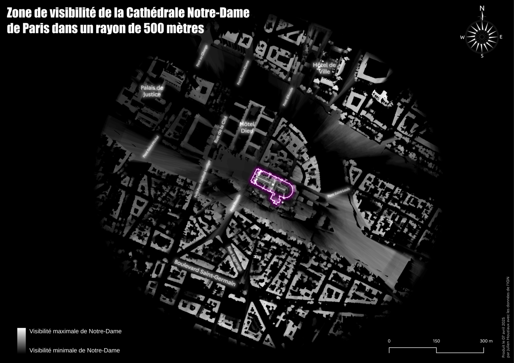
LA ZONE DE VISIBILITÉ DE LA TOUR EFFEIL
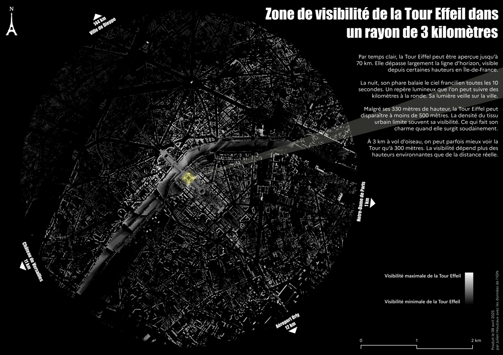
LA FRANCE ET SES RÉGIONS EN ORIGAMI

LES BANCS DE CHAUMONT
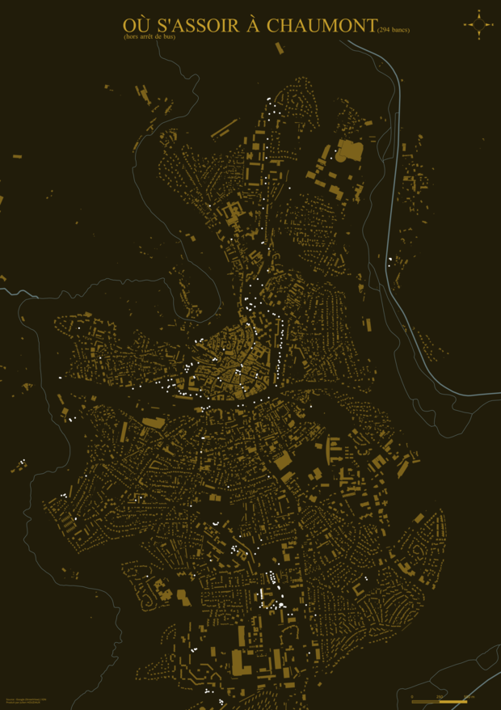
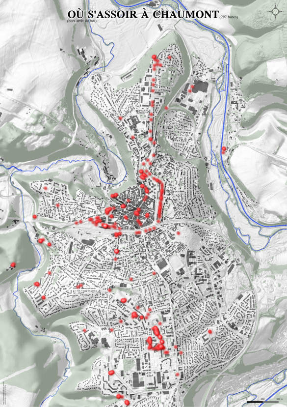
LE TRAJET DE MON VOL VERS LA CHINE
TIMSTAMP_S : epoch("start_date") + ( "distance" / maximum("distance") ) * (epoch("end_date") - epoch("start_date"))
TIMSTAMP_T : format_date(datetime_from_epoch("timstamp_s"), 'yyyy-MM-dd HH:mm:ss')

MON VOYAGE EN CHINE
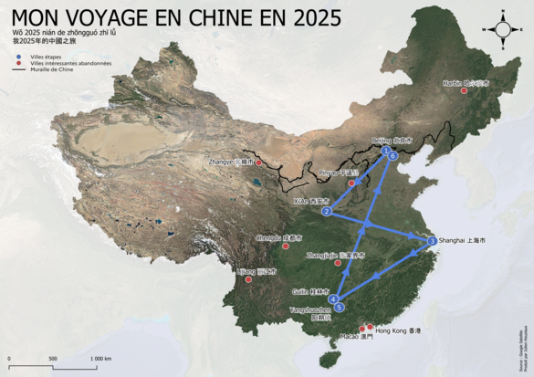
LES ROUTES EN DIRECTION DE CHAUMONT
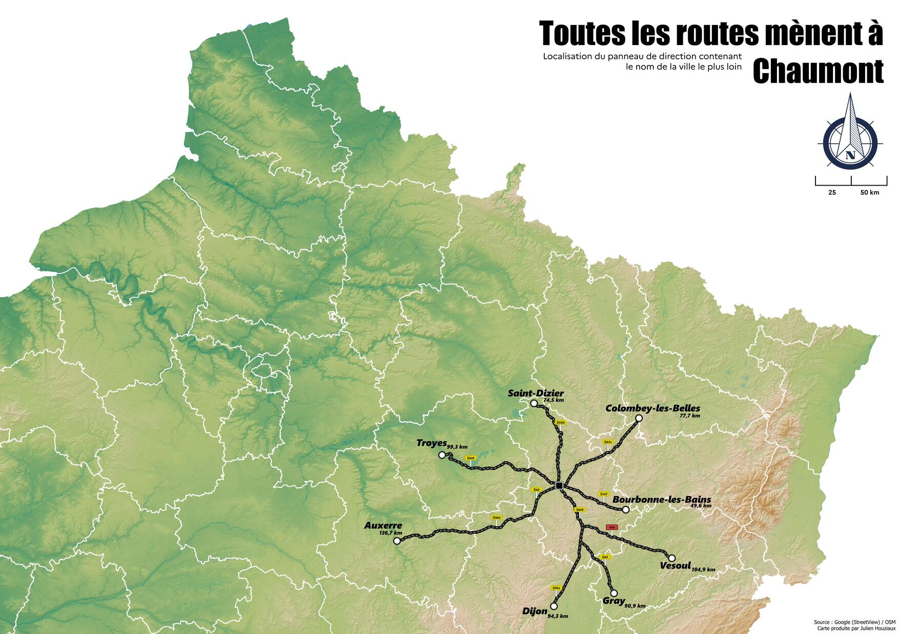
DATE DE CRÉATION DES BÂTIMENTS ENCORE EXISTANT A CHAUMONT
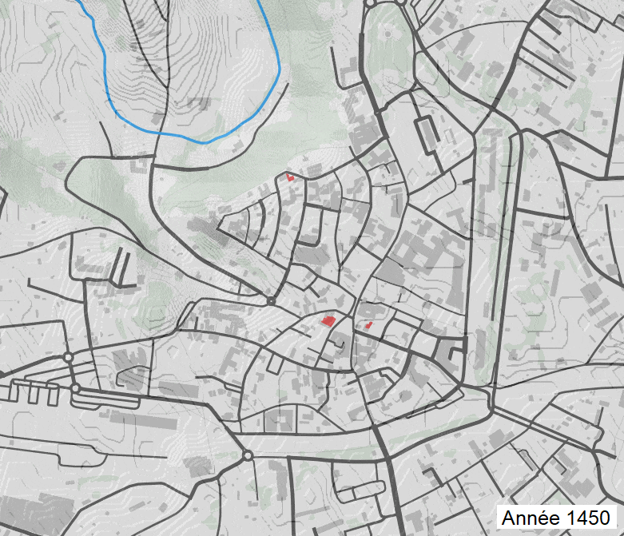
VISUALISATION 3D DE LA HAUTE-MARNE
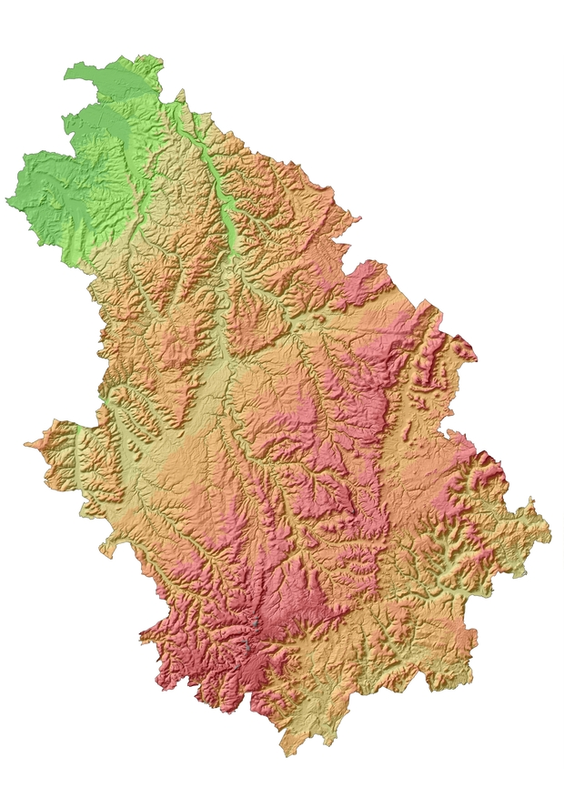
TEST DE CARTE DE DÉPLACEMENT
CARTE DE LA ROUTE DE LA SOIE
make_line(
make_point(x_min($geometry), y(centroid($geometry))),
make_point(x_min($geometry) + (x_max($geometry) - x_min($geometry)) * 0.1, y(centroid($geometry))),
make_point(x_min($geometry) + (x_max($geometry) - x_min($geometry)) * 0.2, y(centroid($geometry))),
make_point(x_min($geometry) + (x_max($geometry) - x_min($geometry)) * 0.3, y(centroid($geometry))),
make_point(x_min($geometry) + (x_max($geometry) - x_min($geometry)) * 0.4, y(centroid($geometry))),
make_point(x_min($geometry) + (x_max($geometry) - x_min($geometry)) * 0.5, y(centroid($geometry))),
make_point(x_min($geometry) + (x_max($geometry) - x_min($geometry)) * 0.6, y(centroid($geometry))),
make_point(x_min($geometry) + (x_max($geometry) - x_min($geometry)) * 0.7, y(centroid($geometry))),
make_point(x_min($geometry) + (x_max($geometry) - x_min($geometry)) * 0.8, y(centroid($geometry))),
make_point(x_min($geometry) + (x_max($geometry) - x_min($geometry)) * 0.9, y(centroid($geometry))),
make_point(x_max($geometry), y(centroid($geometry)))
)
substr("name", @row_number, 1)-(x(transform($geometry, layer_property(@layer, 'crs'), 'EPSG:4326')) - 76)clamp(50000,"longueur" * 33, 90000)
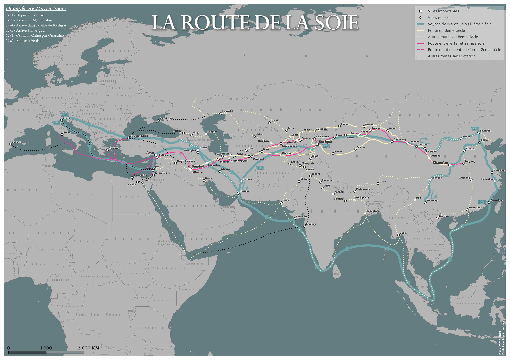

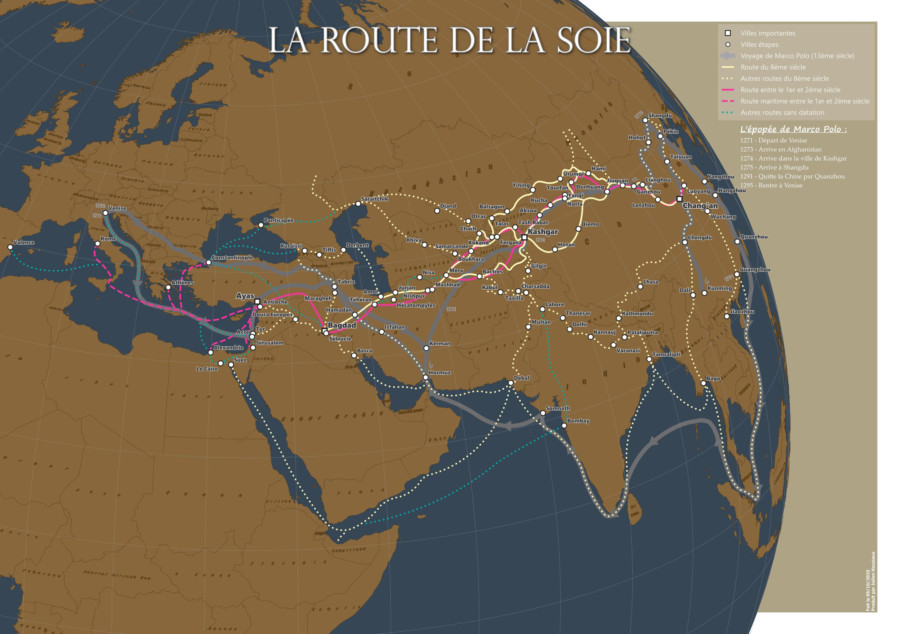
CARTE DE BORDEAUX
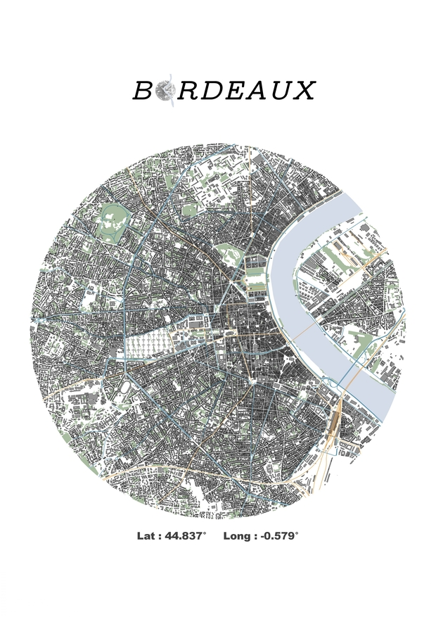
CARTES DE L'AUSTRALIE

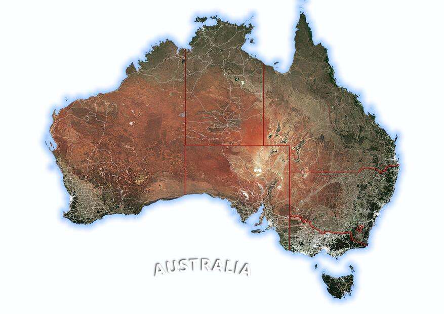
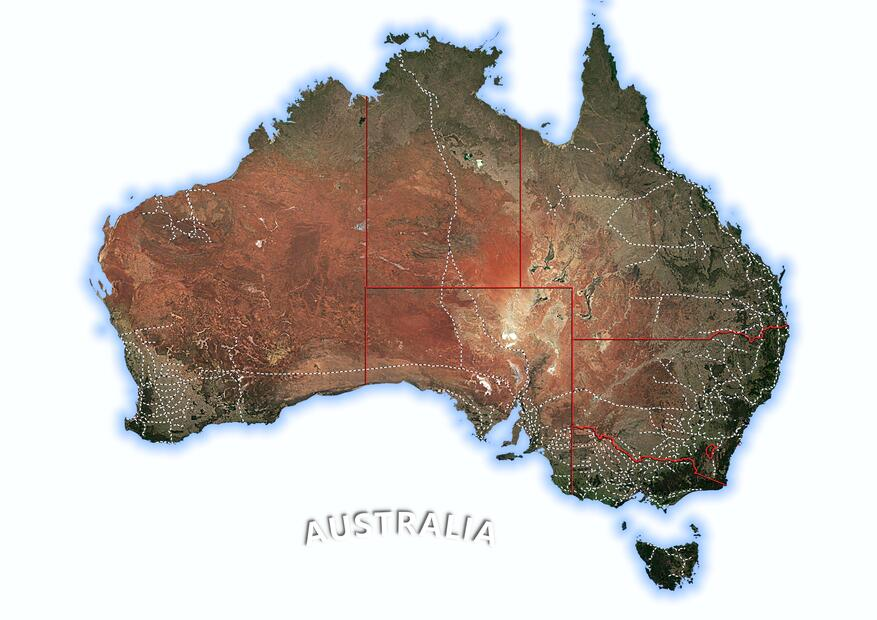
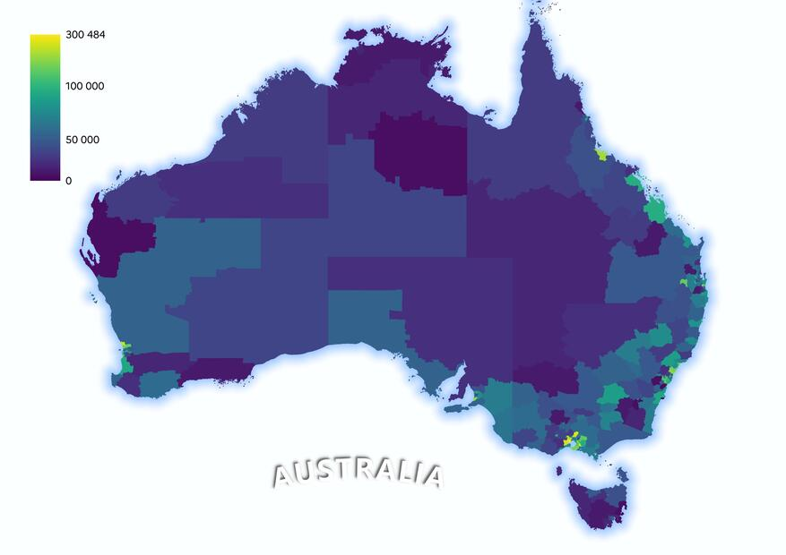
LA ZONE DE VISIBILITÉ
DU MONT-BLANC À 300KM
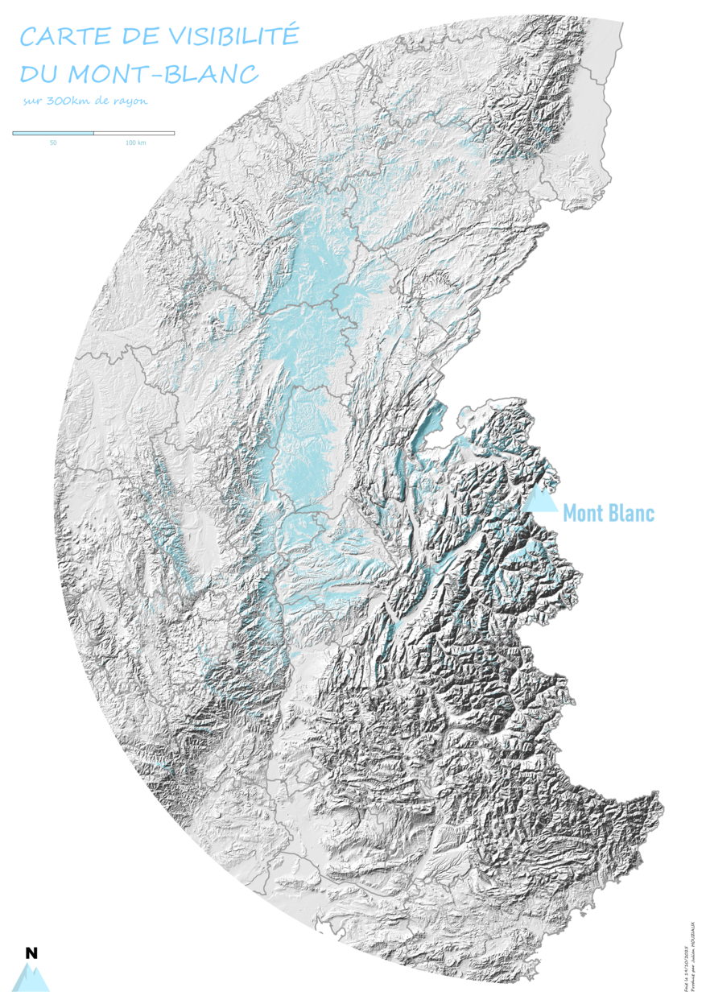
LES VIGNOBLES AOP DE FRANCE
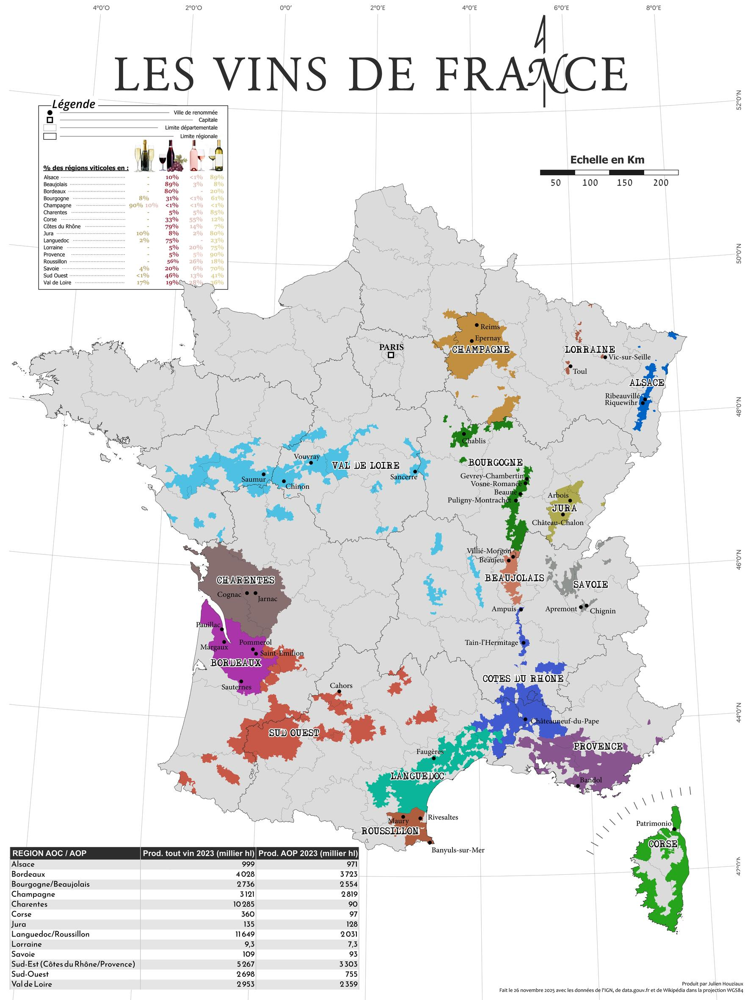